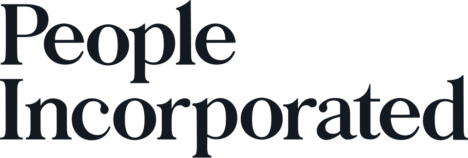
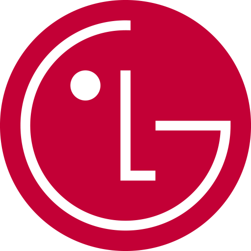
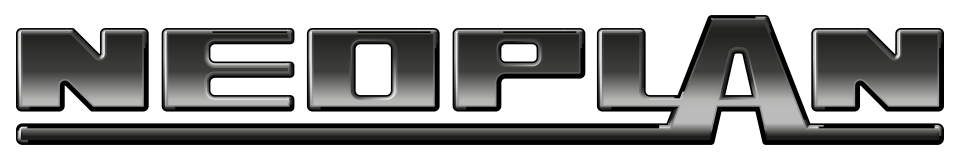
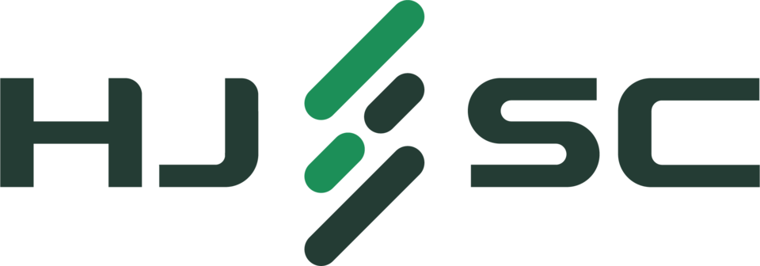
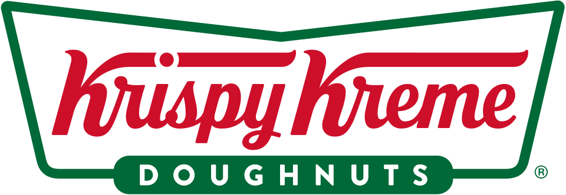
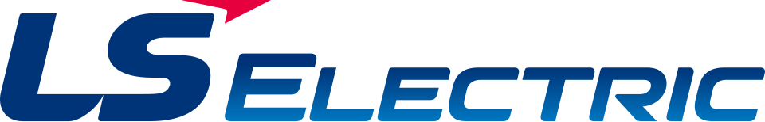
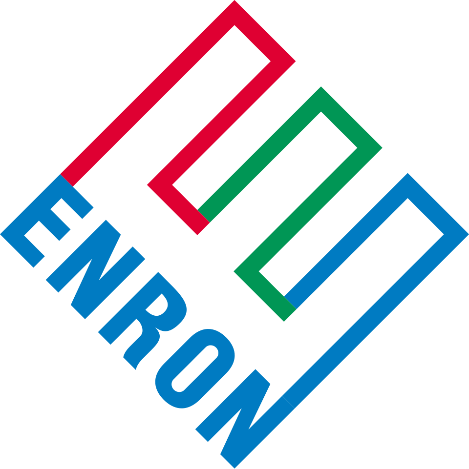
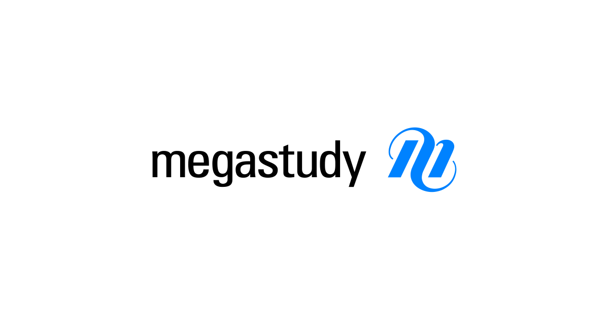
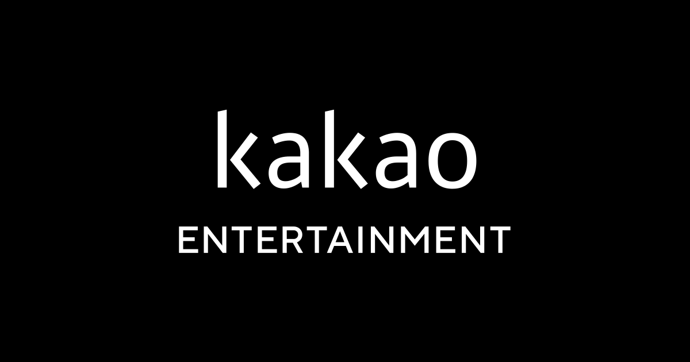
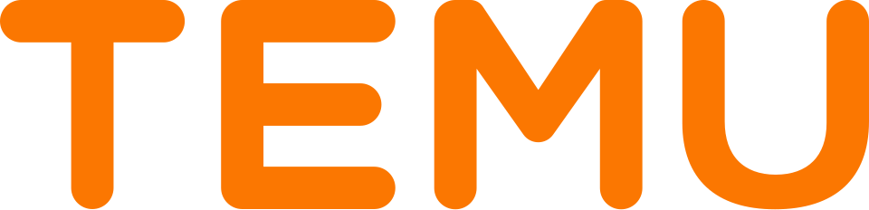

7월에 태어난 브랜드 106곳
7월에 태어난 브랜드 106곳을 탄생일 순으로 모았습니다. 테슬라(Tesla), 보잉(Boeing), 인텔(INTEL)가 모두 7월생입니다.
2026년 7월, 주년을 맞는 브랜드
- 170주년
 크레디트 스위스(Credit Suisse)1856년 7월 5일 탄생
크레디트 스위스(Credit Suisse)1856년 7월 5일 탄생 - 110주년
 보잉(Boeing)1916년 7월 15일 탄생
보잉(Boeing)1916년 7월 15일 탄생 - 75주년중중국농업은행(Agricultural Bank of China)1951년 7월 10일 탄생
- 50주년
 한국수출입은행(Export-Import Bank of Korea)1976년 7월 1일 탄생
한국수출입은행(Export-Import Bank of Korea)1976년 7월 1일 탄생 - 40주년

People Incorporated1986년 7월 28일 탄생 - 30주년

LG유플러스(LG Uplus)1996년 7월 11일 탄생 - 20주년어어울림모터스(Oullim vehicles)2006년 7월 탄생
- 20주년
 오픈DNS(OpenDNS)2006년 7월 탄생
오픈DNS(OpenDNS)2006년 7월 탄생
7월 탄생 달력
날짜까지 확인된 85곳을 날짜 칸에 놓았습니다.
- 1한델스방켄밀레+14
- 2닛카 위스키월마트+2
- 3
- 4아일랜드 레코드AutoZone+2
- 5크레디트 스위스스레드
- 6
- 7Umicore플리머스+3
- 8
- 9매치박스원주문화방송
- 10중국농업은행
- 11피아트서울우유+3
- 12메가스터디CME 그룹+1
- 13크리스피 크림Regions Financial Corporation+1
- 14르노코리아듀렉스
- 15보잉스바루
- 16Yaskawa Electric Corporation엔론
- 17NEC디즈니랜드+4
- 18인텔컬버스
- 19듀폰
- 20카카오엔터테인먼트
- 21아그파게바트캐피털 원+1
- 22워크맨엔지
- 23아비스스노우플레이크
- 24LS일렉트릭조르지오 아르마니
- 25아메리칸 레코드 코퍼레이션대선주조+1
- 26맥 트럭스우드사이드 에너지+3
- 27잉글랜드 은행홀리스터
- 28이케아People Incorporated+1
- 29시리우스XM
- 30로레알
- 31
7월생 브랜드 연대순
 잉글랜드 은행(Bank of England)영국 · 금융
잉글랜드 은행(Bank of England)영국 · 금융 듀폰(DuPont)미국 · 에너지·산업재
듀폰(DuPont)미국 · 에너지·산업재- 크레디트 스위스(Credit Suisse)스위스 · 금융
 한델스방켄(Handelsbanken)스웨덴 · 금융
한델스방켄(Handelsbanken)스웨덴 · 금융 아그파게바트(Agfa-Gevaert)독일 · 기술·전자
아그파게바트(Agfa-Gevaert)독일 · 기술·전자 베를리츠(Berlitz Corporation)독일 · 미디어·엔터테인먼트
베를리츠(Berlitz Corporation)독일 · 미디어·엔터테인먼트 밀레(Miele)독일 · 홈·라이프스타일
밀레(Miele)독일 · 홈·라이프스타일 피아트(Fiat)이탈리아 · 모빌리티
피아트(Fiat)이탈리아 · 모빌리티 NEC일본 · 기술·전자
NEC일본 · 기술·전자 맥 트럭스(Mack Trucks)미국 · 모빌리티
맥 트럭스(Mack Trucks)미국 · 모빌리티 Umicore벨기에 · 에너지·산업재
Umicore벨기에 · 에너지·산업재 로레알(L'Oréal)프랑스 · 뷰티·퍼스널케어
로레알(L'Oréal)프랑스 · 뷰티·퍼스널케어 Yaskawa Electric Corporation일본 · 에너지·산업재
Yaskawa Electric Corporation일본 · 에너지·산업재- 보잉(Boeing)미국 · 에너지·산업재
 니콘(Nikon)일본 · 기술·전자
니콘(Nikon)일본 · 기술·전자 플리머스(Plymouth)미국 · 모빌리티
플리머스(Plymouth)미국 · 모빌리티 아메리칸 레코드 코퍼레이션(American Record Corporation)미국 · 미디어·엔터테인먼트
아메리칸 레코드 코퍼레이션(American Record Corporation)미국 · 미디어·엔터테인먼트 대선주조(Daesun (Liquor))한국 · 식음료
대선주조(Daesun (Liquor))한국 · 식음료 닛카 위스키(Nikka Whisky Distilling)일본 · 식음료
닛카 위스키(Nikka Whisky Distilling)일본 · 식음료
네오플란(Neoplan)독일 · 모빌리티
HJ중공업(HJ Shipbuilding & Construction)한국 · 브랜드·비즈니스 서울우유(Seoul Milk)한국 · 식음료
서울우유(Seoul Milk)한국 · 식음료
크리스피 크림(Krispy Kreme)미국 · 식음료 이케아(IKEA)스웨덴 · 홈·라이프스타일
이케아(IKEA)스웨덴 · 홈·라이프스타일- 중중국농업은행(Agricultural Bank of China)금융
 매치박스(Matchbox)미국 · 홈·라이프스타일
매치박스(Matchbox)미국 · 홈·라이프스타일 스바루(Subaru)일본 · 모빌리티
스바루(Subaru)일본 · 모빌리티- 동동국제강(Dongkuk Steel)한국 · 에너지·산업재
- 우우드사이드 에너지(Woodside Energy)에너지·산업재
 앳코 레코드(Atco Records)미국 · 미디어·엔터테인먼트
앳코 레코드(Atco Records)미국 · 미디어·엔터테인먼트 야마하 발동기(Yamaha Motor Company)일본 · 모빌리티
야마하 발동기(Yamaha Motor Company)일본 · 모빌리티- 디즈니랜드(Disneyland)미국 · 여행·호스피탈리티
 아이홉(IHOP)미국 · 식음료
아이홉(IHOP)미국 · 식음료 구몬교육연구회(Kumon)미국 · 리테일·커머스
구몬교육연구회(Kumon)미국 · 리테일·커머스- 아일랜드 레코드(Island Records)자메이카 · 미디어·엔터테인먼트
 자툰(Saturn)독일 · 리테일·커머스
자툰(Saturn)독일 · 리테일·커머스 월마트(Walmart)미국 · 리테일·커머스
월마트(Walmart)미국 · 리테일·커머스 CACI미국 · 기술·전자
CACI미국 · 기술·전자 아비스(Arby's)미국 · 식음료
아비스(Arby's)미국 · 식음료 아시아자동차공업(Asia Motors)한국 · 모빌리티
아시아자동차공업(Asia Motors)한국 · 모빌리티 인텔(INTEL)미국 · 기술·전자
인텔(INTEL)미국 · 기술·전자 원주문화방송(Wonju Munhwa Broadcasting)한국 · 미디어·엔터테인먼트
원주문화방송(Wonju Munhwa Broadcasting)한국 · 미디어·엔터테인먼트 Regions Financial Corporation미국 · 금융
Regions Financial Corporation미국 · 금융
LS일렉트릭(LS Electric)한국 · 에너지·산업재- 조르지오 아르마니(GIORGIO ARMANI)이탈리아 · 패션·럭셔리
- 한국수출입은행(Export-Import Bank of Korea)한국 · 금융
 돈커부트(Donkervoort)네덜란드 · 모빌리티
돈커부트(Donkervoort)네덜란드 · 모빌리티 AutoZone미국 · 리테일·커머스
AutoZone미국 · 리테일·커머스 워크맨(Walkman)기술·전자
워크맨(Walkman)기술·전자 코코이찌방야(Ichibanya)일본 · 식음료
코코이찌방야(Ichibanya)일본 · 식음료 다이어트 코크(Diet Coke)식음료
다이어트 코크(Diet Coke)식음료 Williams-Sonoma, Inc.미국 · 리테일·커머스
Williams-Sonoma, Inc.미국 · 리테일·커머스 Atari Games미국 · 미디어·엔터테인먼트
Atari Games미국 · 미디어·엔터테인먼트 보다폰(Vodafone)영국 · 기술·전자
보다폰(Vodafone)영국 · 기술·전자 컬버스(Culver's)식음료
컬버스(Culver's)식음료 퀄컴(Qualcomm)미국 · 기술·전자
퀄컴(Qualcomm)미국 · 기술·전자
엔론(Enron)미국 · 에너지·산업재- People Incorporated미국 · 미디어·엔터테인먼트
- 중국국제항공(Air China)여행·호스피탈리티
- 한솥도시락(Hansot)한국 · 식음료
 치포틀레 멕시칸 그릴(Chipotle Mexican Grill)미국 · 식음료
치포틀레 멕시칸 그릴(Chipotle Mexican Grill)미국 · 식음료 캐피털 원(Capital One)미국 · 금융
캐피털 원(Capital One)미국 · 금융- LG유플러스(LG Uplus)기술·전자
 부킹 홀딩스(Booking Holdings)미국 · 여행·호스피탈리티
부킹 홀딩스(Booking Holdings)미국 · 여행·호스피탈리티 미래에셋(Mirae Asset)브랜드·비즈니스
미래에셋(Mirae Asset)브랜드·비즈니스 미래에셋그룹(Mirae Asset Group)한국 · 브랜드·비즈니스
미래에셋그룹(Mirae Asset Group)한국 · 브랜드·비즈니스 펜타시큐리티(Penta Security)한국 · 기술·전자
펜타시큐리티(Penta Security)한국 · 기술·전자 Pivovar Broumov체코 · 식음료
Pivovar Broumov체코 · 식음료- 소프트캠프(SoftCamp)한국 · 기술·전자
 현대로템(Hyundai Rotem)한국 · 에너지·산업재
현대로템(Hyundai Rotem)한국 · 에너지·산업재 컴스코어(Comscore)미국 · 브랜드·비즈니스
컴스코어(Comscore)미국 · 브랜드·비즈니스
메가스터디(Megastudy)브랜드·비즈니스- 르노코리아(Renault Korea)한국 · 모빌리티
 홀리스터(Hollister Co.)미국 · 패션·럭셔리
홀리스터(Hollister Co.)미국 · 패션·럭셔리 듀렉스(Durex)뷰티·퍼스널케어
듀렉스(Durex)뷰티·퍼스널케어 테슬라(Tesla)미국 · 모빌리티
테슬라(Tesla)미국 · 모빌리티 에티하드 항공(Etihad Airways)여행·호스피탈리티
에티하드 항공(Etihad Airways)여행·호스피탈리티 셰이크 섁(Shake Shack)미국 · 식음료
셰이크 섁(Shake Shack)미국 · 식음료 매셔블(Mashable)미디어·엔터테인먼트
매셔블(Mashable)미디어·엔터테인먼트 오픈스트리트맵(OpenStreetMap)영국 · 기술·전자
오픈스트리트맵(OpenStreetMap)영국 · 기술·전자 랑세스(Lanxess)독일 · 에너지·산업재
랑세스(Lanxess)독일 · 에너지·산업재 오두(Odoo)벨기에 · 기술·전자
오두(Odoo)벨기에 · 기술·전자 Zimbra기술·전자
Zimbra기술·전자- 어어울림모터스(Oullim vehicles)한국 · 모빌리티
- 오픈DNS(OpenDNS)미국 · 기술·전자
 솔라시티(SolarCity)미국 · 에너지·산업재
솔라시티(SolarCity)미국 · 에너지·산업재 토니모리(TONYMOLY)한국 · 뷰티·퍼스널케어
토니모리(TONYMOLY)한국 · 뷰티·퍼스널케어 뉴욕멜론은행(The Bank of New York Mellon)미국 · 금융
뉴욕멜론은행(The Bank of New York Mellon)미국 · 금융 CME 그룹(CME Group)미국 · 금융
CME 그룹(CME Group)미국 · 금융 액티비전 블리자드(Activision Blizzard)미국 · 미디어·엔터테인먼트
액티비전 블리자드(Activision Blizzard)미국 · 미디어·엔터테인먼트- 모건 스탠리(Morgan Stanley)미국 · 금융
 엔지(Engie)프랑스 · 에너지·산업재
엔지(Engie)프랑스 · 에너지·산업재 시리우스XM(Sirius XM Rad)미국 · 미디어·엔터테인먼트
시리우스XM(Sirius XM Rad)미국 · 미디어·엔터테인먼트 클라우드플레어(Cloudflare)미국 · 기술·전자
클라우드플레어(Cloudflare)미국 · 기술·전자
카카오엔터테인먼트(Kakao Entertainment)한국 · 미디어·엔터테인먼트 인스타카트(Instacart)브랜드·비즈니스
인스타카트(Instacart)브랜드·비즈니스 스노우플레이크(Snowflake Inc.)미국 · 기술·전자
스노우플레이크(Snowflake Inc.)미국 · 기술·전자 오늘의집(Ohou)홈·라이프스타일
오늘의집(Ohou)홈·라이프스타일 코어콘텐츠미디어(Core Contents Media)미디어·엔터테인먼트
코어콘텐츠미디어(Core Contents Media)미디어·엔터테인먼트 크래프트 하인즈(Kraft Heinz)미국 · 식음료
크래프트 하인즈(Kraft Heinz)미국 · 식음료 밀리의서재(Millie's Library)미디어·엔터테인먼트
밀리의서재(Millie's Library)미디어·엔터테인먼트 아홀드 델레이즈(Ahold Delhaize)네덜란드 · 리테일·커머스
아홀드 델레이즈(Ahold Delhaize)네덜란드 · 리테일·커머스 에어프레미아(Air Premia)한국 · 여행·호스피탈리티
에어프레미아(Air Premia)한국 · 여행·호스피탈리티- 솔브레인(Soulbrain)한국 · 기술·전자

Temu리테일·커머스 스레드(Threads)미디어·엔터테인먼트
스레드(Threads)미디어·엔터테인먼트
7월에 태어난 것으로 확인된 브랜드는 106곳입니다. 가장 오래된 곳은 1694년의 잉글랜드 은행(Bank of England), 가장 최근은 2023년의 스레드(Threads)입니다. 2026년 7월에는 크레디트 스위스(Credit Suisse)(170주년), 보잉(Boeing)(110주년), 중국농업은행(Agricultural Bank of China)(75주년) 등 12곳이 주년을 맞습니다. 생일이 같은 브랜드도 있습니다. 7월 1일에는 한델스방켄(Handelsbanken)(1871)와 밀레(Miele)(1899)와 네오플란(Neoplan)(1935), 7월 17일에는 NEC(1899)와 디즈니랜드(Disneyland)(1955)와 CACI(1962)가 태어났습니다. 설립연도가 확인된 브랜드는 105개이며 가장 오래된 곳은 1802년, 가장 최근은 2023년에 시작했습니다. 시기별로는 1900년 이전 8개, 1900~1949년 15개, 1950~1999년 47개, 2000년 이후 35개입니다. 수록 자료로는 로고 이미지 102개, 로고 변천 자료 3개, 연혁 타임라인 8개를 갖췄습니다. 이 가운데 93개는 공식 웹사이트가 일치하는 위키데이터 개체로 연결해 두었습니다. 날짜는 위키데이터, 위키백과 정보상자, 브랜드 본문 가운데 같은 연월로 확인되는 값만 썼고, 출처끼리 다르면 싣지 않았습니다.